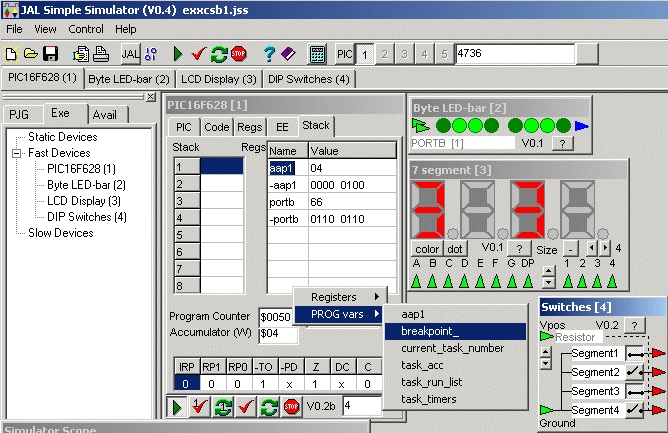

March 2003
JALss, XCSB demo
This example shows a simulation of an XCSB program.
The program counts form 0 to 9 and round again. The number is increased every 250 msec, for which the multi-tasking feature of XCSB is used.
When the figure 4 is displayed, the inline breakpoint=4 (see program listing) halts the simulation, as shown in the picture below. In the lower-right corner of the PIC device you can see the number of the breakpoint that stopped the simulation.
On the "stack page" you can see the actual values of a PIC register (PORTB) and a user variable (AAP1). The user variable will be tracked, even if it's moved by a new compilation. Both bytes are shown in hexadecimal value and binary value (to get a binary representation, place a minus sign before the variable name).
The pull downed menus shows the available user variables in the current program.
At the right top a special device is shown, "byte LED-bar", with one press on the input pins, it can be connected to a complete byte. This byte may even be an internal register of a PIC or even a user variable of the program loaded into the PIC.

Here is the used XCSB code (presented in JALcc).
If you never have used JALss, you may notice that the filename has the extension ".XCB".
Sergio Masci (the creator / owner of XCSB) has reserved this extension special for this purpose, because I had reserved ".BAS" already for something else. The included file should have also had the extension ".XCB", this works now but I forgot to change it before shooting this picture.